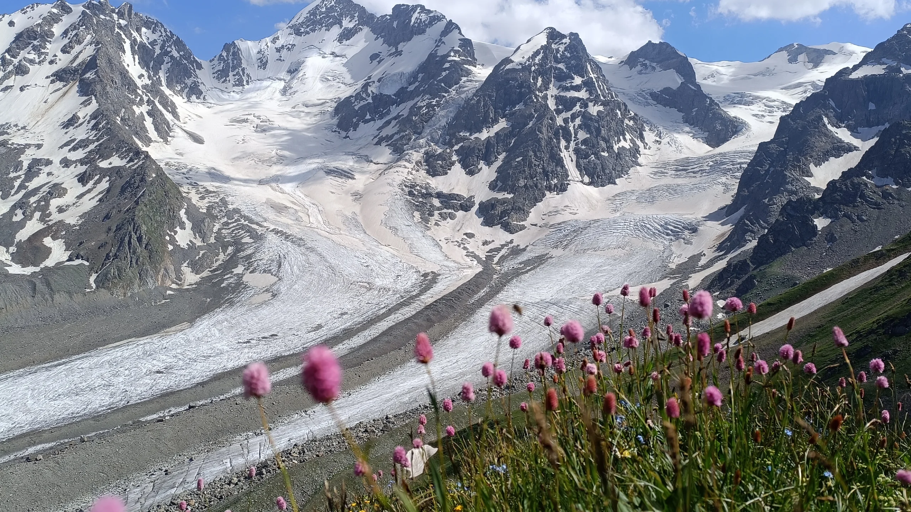
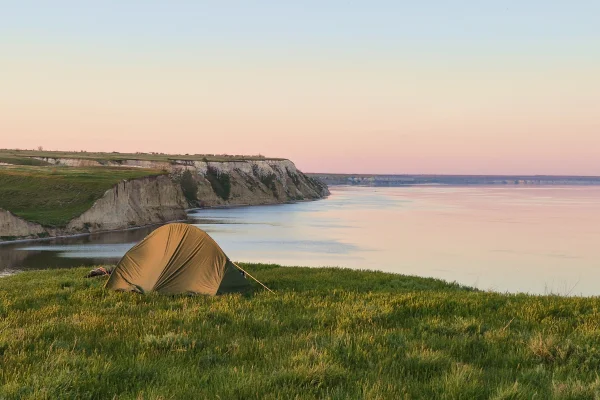
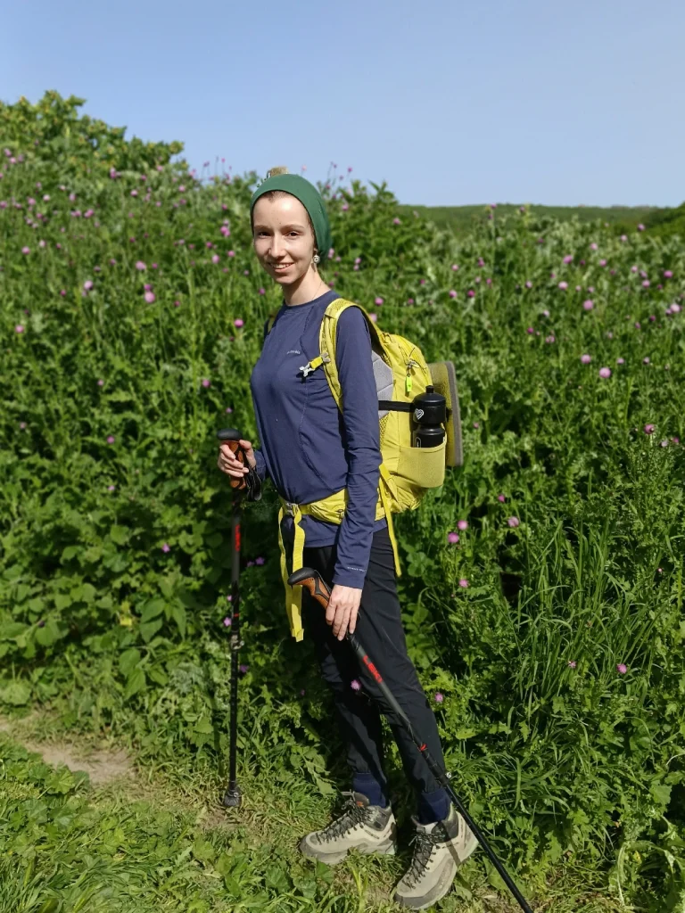
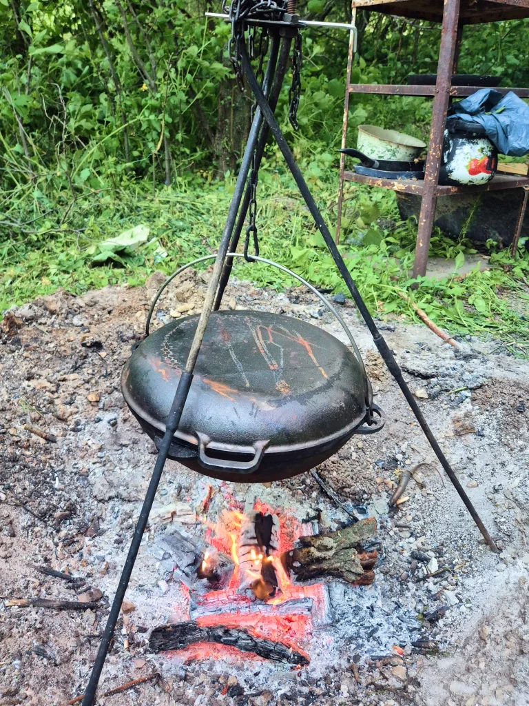
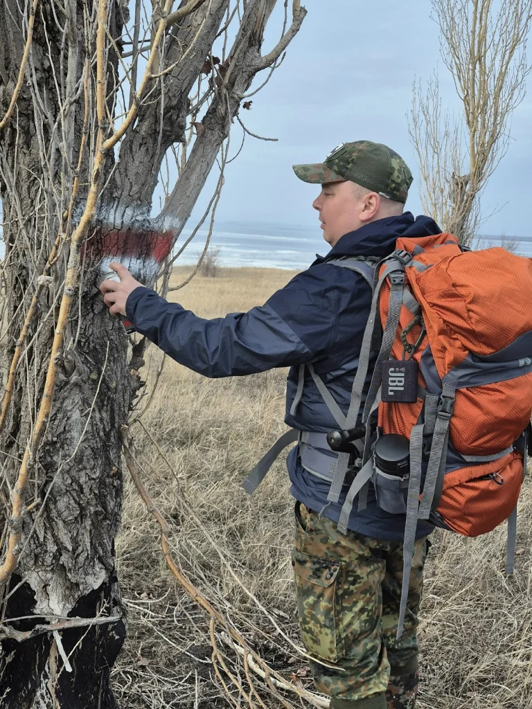
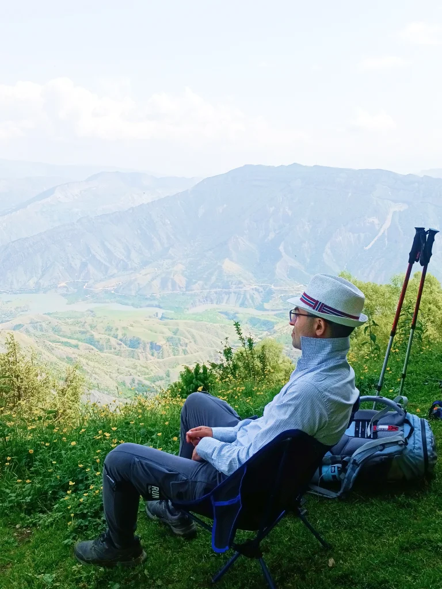
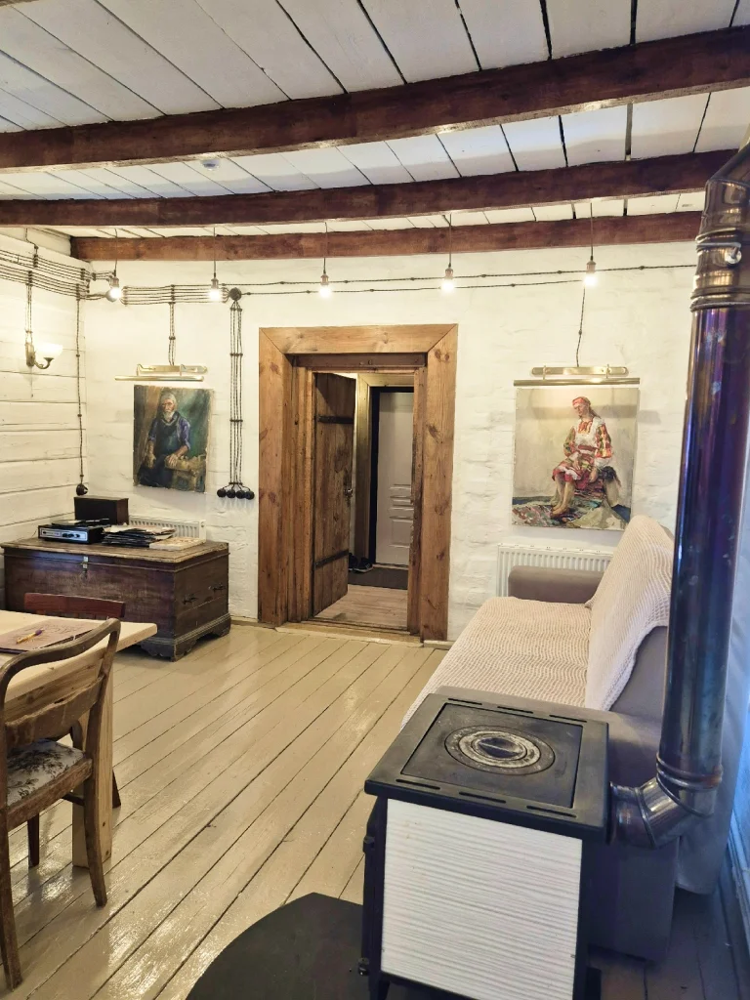
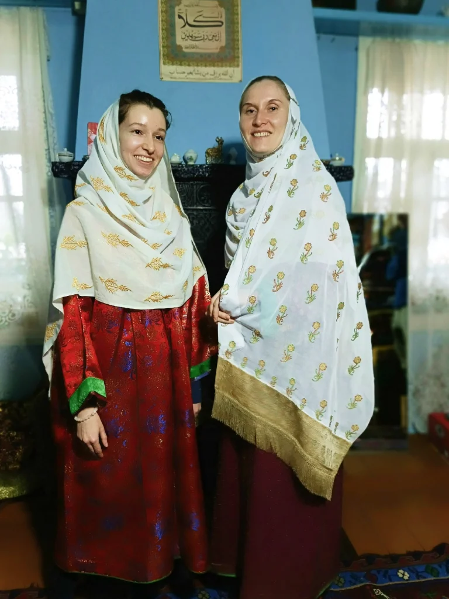
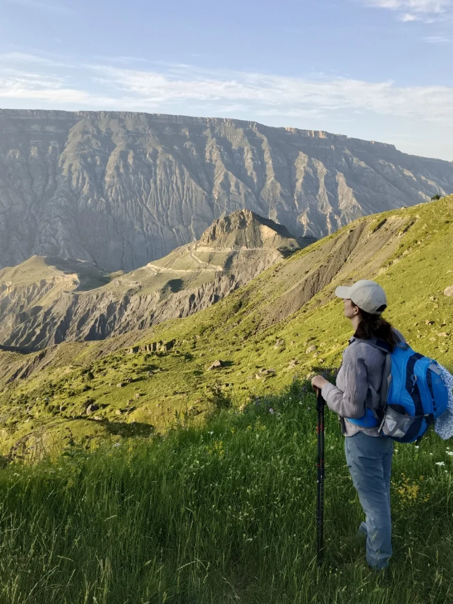
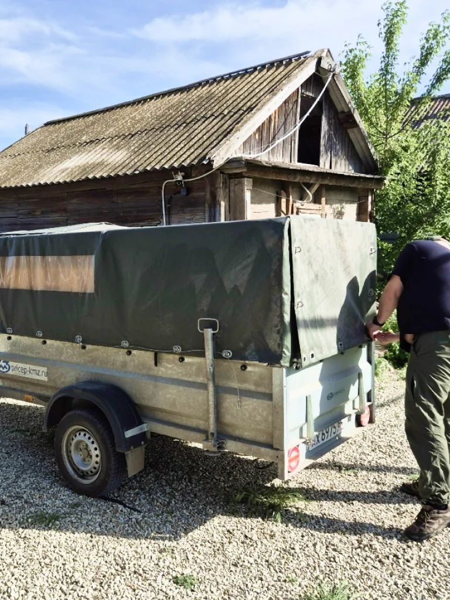

-

Волга море
Поход проходит по югу Саратовской области, вдоль высокого берега Волги, величайшей реки Европы. Через исторические сёла основанные в 16-17 веке первыми колонистами.
Сложность 1/5
-

Узоры времён
Пеший поход по южному Дагестану с проживанием у местных жителей. Всё включено. Поход стартует в затерянном Даргинском селе Адага ( четыре пары быков дрг.) и заканчивается в старейшем городе России Дербенте.
Сложность 3/5
-

Тропа Императора
Пеший поход по центральному Дагестану с проживанием в гостевых домах. Всё включено.
Сложность 3/5
-

Горы мастеров
Пеший поход на легке с ночевками в гостевых домах.Всё включено. Маршрут начинается в необычайно живописном районе, Даргинско - Кубачинском нагорье.
Сложность 3/5
1
/ 12
Идём на легке
Мы не несём на себе палатки, спальное снаряжение и запас провизии.
В поход берём только самое необходимое для преодоление погодных условий. Меньше вес рюкзака позволяет пройти и увидеть больше, а устать меньше.

2
/ 12
Еда это часть путешествия.
В своих походах я опираюсь на местные продукты и национальную кухню
А также блюда приотовленные на живом огне.

3
/ 12
Маршрут хорошо разведан
На предварительную разведку и планирование каждого маршрута уходит много времени, но это необходимо.
Это позволяет обеспечить безопасность, отсутствие сюрпризов и даёт гарантию, что увидим самые красивые места.

4
/ 12
В походах нет дежурств.
Задача как вас накормить лежит целиком на организаторах похода.
Так что у вам будет достаточно свободного времени , что бы провести его наедине с природой.При этом если у вас есть желание помочь, буду только рад.

5
/ 12
Всегда комфортное размещение
Вам не нужно заботиться о постановки лагеря и организации мест ночёвки.
В зависимости от похода это может быть мобильный кемпинг, отель или дом местного жителя, но можете быть уверены , что это будет лучшее решение, для того что бы сделать ваш отдых максимально запоминающимся и комфортным.

6
/ 12
Полное погружение.
Каждая локация неповторима.
Ваш ждет не просто поход , но и полная история места. Я включаю в маршрут всё интересное что помогает глубже почувствовать атмосферу места. Это может быть мастер классы, музеи, сап борды, рыбалка или необычный транспорт.

7
/ 12
Уникальные маршруты.
За время работы в проекте Кавказская тропа, я успел принять участие в исследовании и создании маршрутов в республиках Дагестан, Чечня, Ингушетия и Краснодарский край, а также создать собственный национальный маршрут в Поволжье. Для меня это больше чем тропы или километры дорог, это годы моей жизни потраченные на создание нового и уникального способа путешествать. Теперь я с гордостью могу представить вам, своё видение идеального похода.

8
/ 12
Страховка
В дикой природе нет ровных поверхностней, а с погодой часто невозможно договориться.
Несмотря на все меры обеспечения безопасности похода риск травмы всегда остаётся. Поэтому я оформляю спортивную страховку на каждого участника.

3
/ 12
Еда это часть путешествия.
На предварительную разведку и планирование каждого маршрута уходит много времени, но это необходимо.
Это позволяет обеспечить безопасность, отсутствие сюрпризов и даёт гарантию, что увидим самые красивые места.
3
/ 12
Еда это часть путешествия.
На предварительную разведку и планирование каждого маршрута уходит много времени, но это необходимо.
Это позволяет обеспечить безопасность, отсутствие сюрпризов и даёт гарантию, что увидим самые красивые места.
3
/ 12
Еда это часть путешествия.
На предварительную разведку и планирование каждого маршрута уходит много времени, но это необходимо.
Это позволяет обеспечить безопасность, отсутствие сюрпризов и даёт гарантию, что увидим самые красивые места.
3
/ 12
Еда это часть путешествия.
На предварительную разведку и планирование каждого маршрута уходит много времени, но это необходимо.
Это позволяет обеспечить безопасность, отсутствие сюрпризов и даёт гарантию, что увидим самые красивые места.
3
/ 12
Еда это часть путешествия.
На предварительную разведку и планирование каждого маршрута уходит много времени, но это необходимо.
Это позволяет обеспечить безопасность, отсутствие сюрпризов и даёт гарантию, что увидим самые красивые места.
Почему стоит поехать
1. Пройтись по тропе в долине реки Уллучай, одной из самых красивых в Дагестане.
2. Увидеть покинутые сёла Санакари и Чахри пока они ещё существуют
3. Мы идем через не туристические локации
4. Национальная кухня южного Дагестана одна из богатых по количеству блюд на Северном Кавказе.
5. Возможность побывать в гостях у местных жителей
6. Древности. Множество народов оставили после себя следы на этой земле.
7. Оценить масштаб Даг Бары. Горная стена одно из чудес мира.
8. Дюрк - святая пещера в табасарне. В ней молились о защите паломники, медитировали Суфии.
9. Дербент. Старейший город России. Ворота ворот - как его называли арабы.